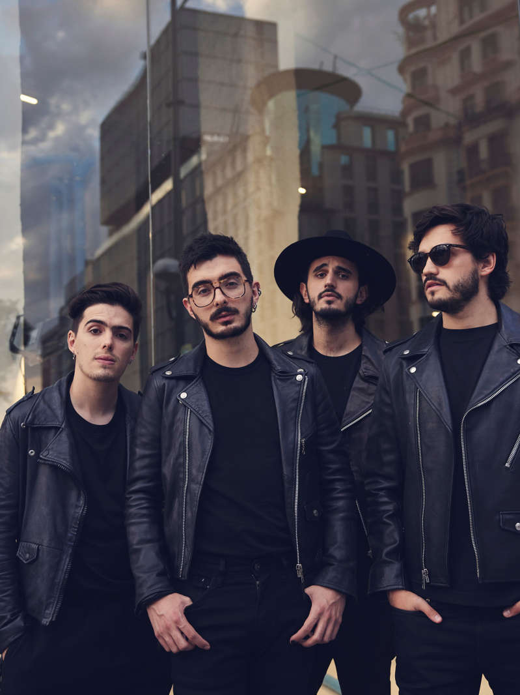
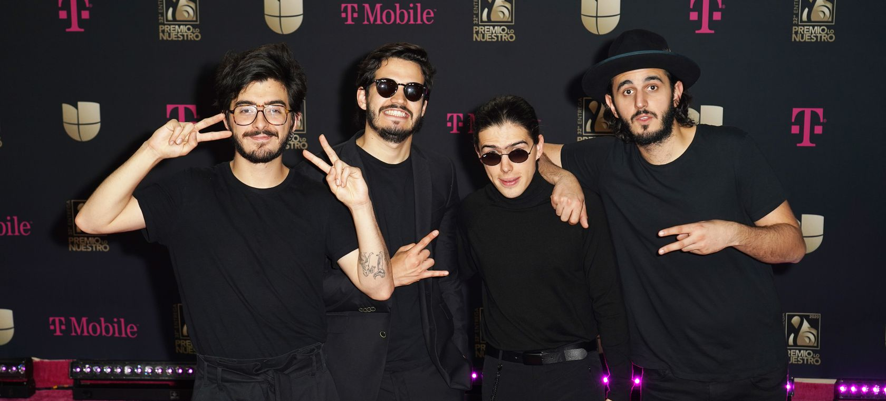
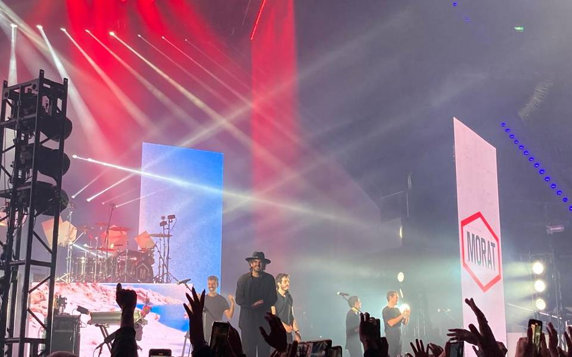
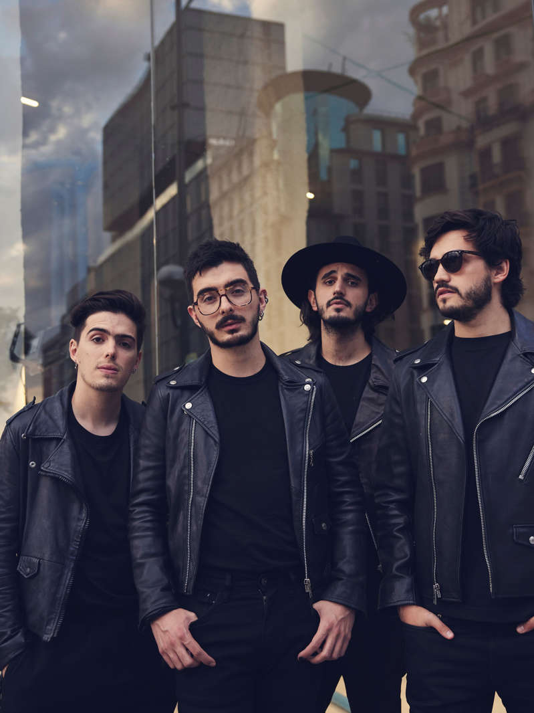
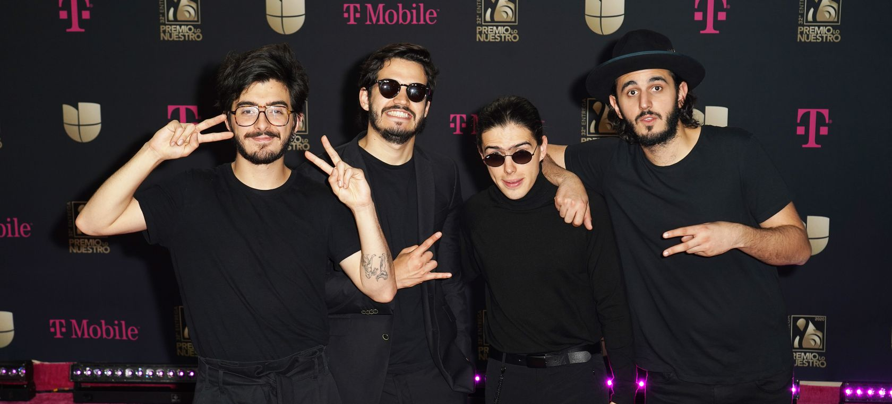
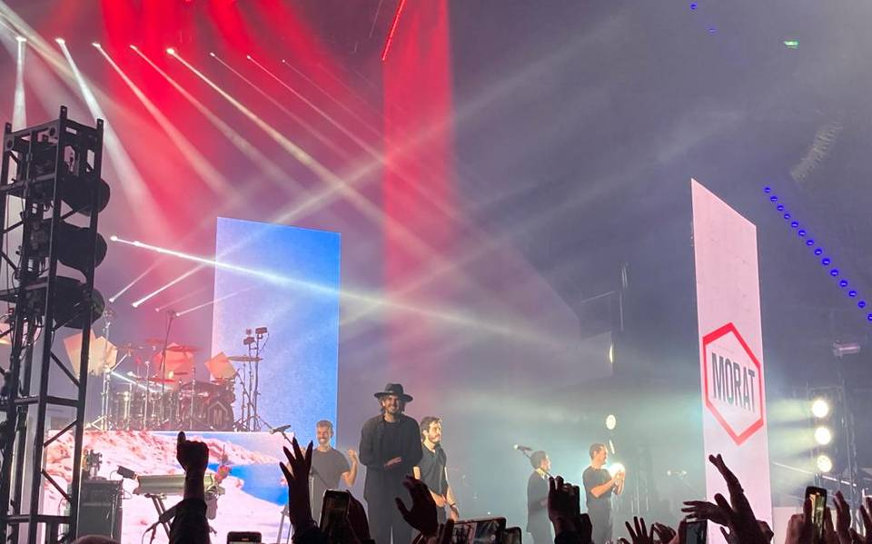

Historia de la banda
La banda Morat se formó en 2015 cuando los cuatro amigos decidieron unir sus talentos musicales. Desde
entonces, han logrado un gran éxito tanto en su país natal como a nivel internacional. Han ganado varios
premios y han colaborado con artistas reconocidos en la industria musical.
Los integrantes de Morat son colombianos y se conocen desde los 5 años de edad, ya que estudiaban juntos en el colegio
Gimnasio La Montaña, de la ciudad de Bogotá, y algunos de ellos posteriormente en la Universidad de los Andes. Dos de
sus integrantes (Simón y Martín Vargas) son hermanos de sangre. Comenzaron tocando juntos en varias ocasiones y
cuando cursaban la secundaria Juan Pablo Isaza tomó la decisión de crear una banda cuando seguían estudiando. En el
año 2014, la banda realizó una sesión de grabación en Bogotá.
Un sitio al que concurrían mucho como músicos principiantes fue La Tea, donde en un inicio sus fanáticos eran el
personal de seguridad. Y con el paso del tiempo empezaron a tener una audiencia propia. Simón Vargas contó esta anécdota
respecto a ese lugar: "Recuerdo que teníamos un juego: cada vez que tocábamos en La Tea tratábamos de adivinar cuánta
gente iba a vernos...Y, por lo general, llegaban más personas de las que esperábamos."
En sus comienzos, no había grandes expectativas para la banda. En su primera reunión con el representante artístico
Malaver, fueron rechazados después de que escuchara una de sus primeras composiciones. La respuesta que les dio fue la
siguiente: "Creo que ustedes son talentosos, pero nunca tendrán una canción en la radio. Deberían haber nacido en
Argentina a fines de los setenta, porque su música no es adecuada para lo que está sucediendo en este momento". Pero
una vez que los escuchó tocar en vivo en La Tea tiempo después, Malaver quedó impresionado con el potencial de los
chicos y decidió representarlos.
Los integrantes de la banda solían ir a una finca en las afueras de Bogotá llamada "La Morat", lugar donde la banda hizo
sus primeros ensayos. La finca pertenecía a un familiar del ex integrante Alejandro Posada Carrasco, Antonio de Morat.
Antes de adoptar el nombre Morat, eran conocidos como "Malta". Pero, tiempo después, al ir a firmar con Universal Music,
una banda brasileña ya estaba registrada como Malta, así que cambiaron su nombre al actual.
El 17 de febrero de 2015, Morat lanzó su primera canción, "Mi nuevo vicio", con la colaboración de Paulina Rubio. Con
él, Morat consiguió Disco de Platino Digital, un número 1 de Ventas Digitales en España, y un número 1 en AirPlay en
México. Ese mismo día, se lanzó otra canción titulada Cuánto me duele en dos versiones, una en el estudio con un vídeo
con la letra y otra acústica, con la producción de Mauricio Rengifo, de la cual la versión acústica está incluida en el
EP "Grabado en madera". El 21 de abril del mismo año se lanzó el videoclip de la canción. El 13 de noviembre de 2015 se
presenta un nuevo sencillo llamado Cómo te atreves, que alcanza el número 1 en iTunes y los lleva a la fama en España.
Tras su éxito casi inmediato en 2015, lanzaron el 19 de junio de 2016 su primer álbum de estudio, Sobre el amor y sus
efectos secundarios, a través de Universal Music, con 12 canciones. El álbum debutó alcanzando el número uno en varios
países hispanos como Colombia, México y España.
En este mismo año, fueron nominados a la categoría Mejor artista nuevo en la ceremonia de los Premios Grammy Latinos a
celebrarse el 17 de noviembre. Finalmente, perderían la categoría ante su compatriota Manuel Medrano.
El 19 de diciembre de 2016, Alejandro Posada, el antiguo percusionista de la banda hizo una publicación en redes
sociales a través de la cuenta de la banda anunciando que abandonaba Morat para proteger cosas importantes para él,
incluyendo sus intenciones de estudiar arquitectura. Sin embargo, anunció que Morat tendría un nuevo baterista, Martín
Vargas, hermano de Simón.
 




